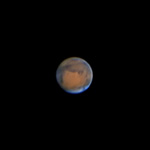
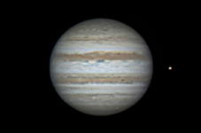
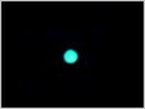

Assez difficile à observer car toujours proche du Soleil, Mercure ressemble à la Lune mais sa température au sol peut atteindre 450°C
Les Planètes


Entourée d'une épaisse atmosphère de gaz carbonique, vénus est une planète inhospitalière. La température au sol peut atteindre 450°C avec une pression de 100 atmosphères terrestres.

Mars est une planète désertique agitée de tempêtes de poussières qui recouvrent parfois son sol basaltique. Dans un passé lointain, de l'eau liquide coula probablement sur Mars

Avec ses 140 000 km de diamètre, Jupiter est la géante du système solaire. C'est une planète gazeuse ( principalement de l'hydrogène ) qui tourne en moins de 10 heures sur elle-même

Saturne est une planète gazeuse située à un milliard 500 millions de km du Soleil. Découverts il y a 400 ans par Galilée et Huygens, ses anneaux mesurent environ 300 000km de diamètre pour une épaisseur d'un km. Ils sont formés de poussières et de glace.

Découverte en 1781 par W. Herschel, Uranus n'est pas discernable à l'oeil nu. Située à près de 3 milliards de km du Soleil, sa lumière met près de 2h 45 min pour nous parvenir. C'est une planète géante de glace.

Découverte par le calcul en 1846 par Le Verrier et Adams, Neptune n'est pas discernable à l'oeil nu. Située à 4,5 milliards de km du Soleil, c'est une planète géante de glace de 45 000 km de diamètre.